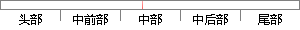

优先级高的任务先运行，优先级底的任务后运行。
片段位置图

相似结果
相似片段：[图文]互斥信号是一个二值信号,它可以使任务以独占方式使用共享资源。1 任务优先级反转现象当任务以独占方式使用共享资源时,会出现低优先级任务先于高优先级任务而被运行...
| 标题 | 《互斥型信号量和任务优先级反转 - engineerdream的日志 - 网易博客》 |
| 对比库 | PaperRater云论文库 |
| 网址 | http://zhangzhenyuan163.blog.163.com/blog/static/8581938920115134643217/ |
| 相似率 | 100% （严重抄袭） |
※ 片段修改建议 ※
近似词参考：- 任务：使命 义务
系统自动生成语句：优先级高的使命先运行，优先级底的使命后运行。
注：本片段修改建议为系统自动生成，仅供参考。